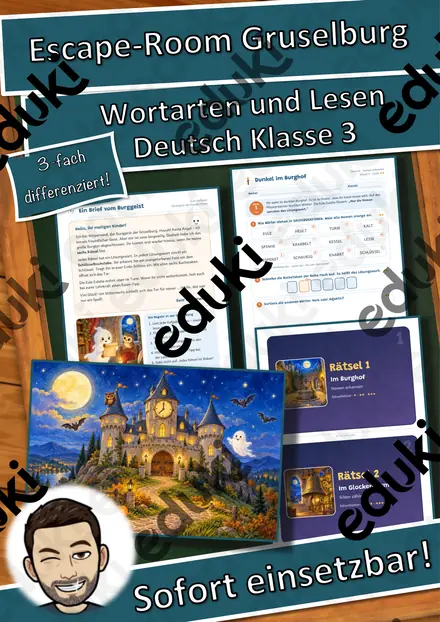
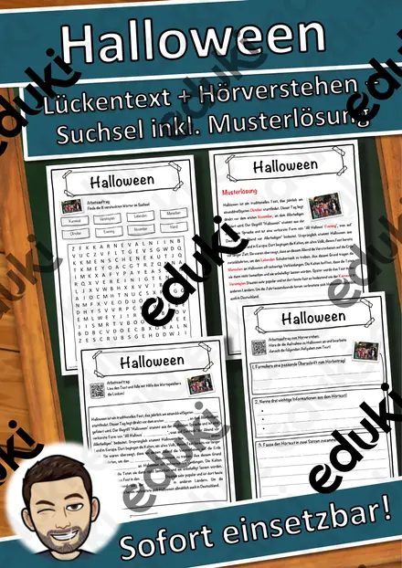
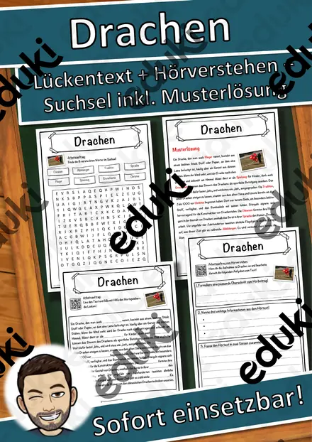
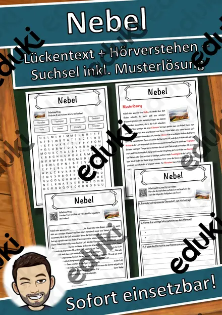
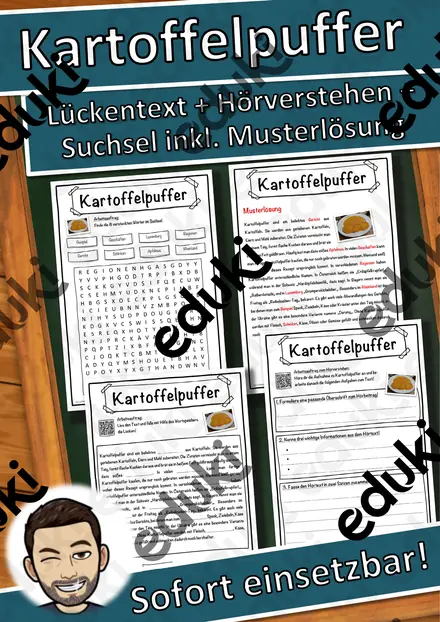
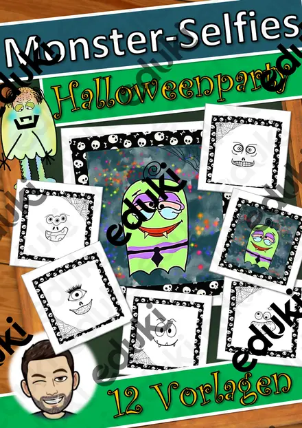
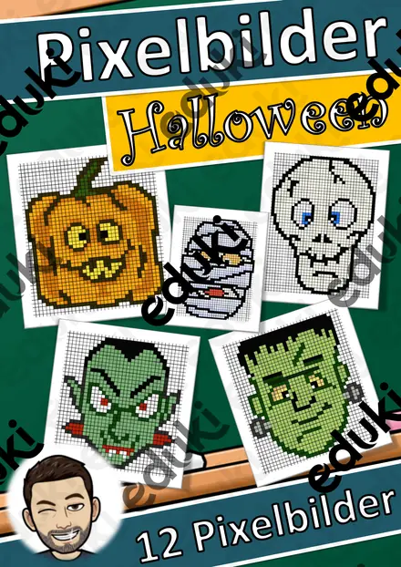

Lesespaziergang DaZ: Sankt Martin – Wortschatz mit Rätseln, 3-fach differenziert (Klasse 1–4)

3D-Anhänger Herbst – Oktaeder, Diamant und Kugel zum Ausmalen und Basteln, 3-fach differenziert (Klasse 3/4)

Materialpaket Feste im Winter für die 2. Klasse: 6 Lesespurgeschichten mit Rätselaufgaben (Sankt Martin, Nikolaus, Advent, Weihnachten & Silvester)

Lesekartei St. Martin – 32 Kinderfragen mit Antworten in 3 Stufen (Klasse 2–4)

Herbst-Forscher-Kamera – Papier-Kamera zum Laminieren mit Foto-Aufträgen und Fotoalbum, 3-fach differenziert (Klasse 1/2)

Herbstkranz mit Elfchen – Fensterbild gestalten und Herbstgedicht schreiben, 3-fach differenziert (Klasse 2/3)

Igel im Laubnest – Klappnest basteln mit Sachtext Winterschlaf, 3-fach differenziert (Tiere im Herbst, Klasse 1/2)

St.-Martins-Laterne aus einem Blatt – falten, einschneiden, rollen, mit Martinsgeschichte, 3-fach differenziert (Klasse 2/3)

Herbst-Klappkarte Eichhörnchen – Figurenkarte basteln mit Sachtext, 3-fach differenziert (Tiere im Herbst, Klasse 2/3)

Flatter-Fledermaus am Stab – bewegliche Bastelfigur mit Sachtext, 3-fach differenziert (Halloween/Herbst, Klasse 2/3)

Der Kürbis von innen – Klapp-Kürbis basteln und beschriften, 3-fach differenziert (Halloween/Herbst, Klasse 1/2)

Halloween-Ziehkarten – Präpositionen sichtbar machen: über, vor, neben, auf, 3-fach differenziert (Klasse 1/2, DaZ)

Spinnen-Rätsel-Faltkarte – Halloween-Rätsel lesen und schreiben, Pop-up-Spinne, 3-fach differenziert (Klasse 2/3)

Mein Grusel-Meter – Halloween-Drehkarte basteln, Adjektive steigern und vergleichen, 3-fach differenziert (Klasse 2/3)

Halloween-Hüpffiguren – 6 Bastelvorlagen mit Federkugel, Steckbrief und Geschichte, 3-fach differenziert (Klasse 1/2)

Halloween Taschenlampen-Rätsel „Was steckt im Glas?“ – Sätze mit ein/eine schreiben, 3-fach differenziert (Klasse 1/2)

Halloween Wackel-Skelett – Bastelvorlage, Sachtext Skelett und Knochen beschriften, 3-fach differenziert (Klasse 3/4)

Halloween-Armbanduhr aus Papier – Uhrzeit lernen mit Bastelvorlage, 3-fach differenziert (Klasse 2/3)

3D-Zauberbild Lebensraum Wald – Umkehrperspektive basteln, Sachtext und Forscherauftrag, 3-fach differenziert (Klasse 3/4)

Klapp-Spukhaus zu Halloween – Bastelvorlage mit Schreibanlass und Wortspeicher, 3-fach differenziert (Klasse 3/4)

Halloween-Kegelfiguren – Körper Kegel basteln und erforschen, 3-fach differenziert (Mathematik/Kunst Klasse 3/4)

Halloween-Handpuppen – Bastelvorlage mit Sachtext und Puppentheater, 3-fach differenziert (Klasse 1/2)

Halloween-Rätselpuzzle Einmaleins – Gespenst, Fledermaus, Katze und Kürbis, 3-fach differenziert mit Selbstkontrolle (Klasse 2/3)

Fensterlaterne Sankt Martin – Laterne basteln mit Lesetext zur Legende, 3-fach differenziert (Klasse 1–3)

3D-Anhänger Halloween – Oktaeder, Diamant und Kugel zum Ausmalen und Basteln, 3-fach differenziert (Klasse 3/4)

Spiral-Gespenster zum Aufhängen – Halloween-Bastelvorlage mit Lesetext, 3-fach differenziert (Klasse 2/3)

Gespensterhaus aus meiner Hand – Halloween-Bastelvorlage mit Lesen und Schreiben, 3-fach differenziert (Klasse 1/2)

Mein Halloween-Mitmachheft – Rätseln, zählen, lesen, schreiben, 3-fach differenziert (Klasse 1–2)

Escape-Room Gruselburg zu Halloween – Wortarten und Lesen, 3-fach differenziert (Klasse 3)

Lesespaziergang: Frühblüher im Garten und im Wald – 3-fach differenziert (★/★★/★★★), Klasse 2–4

Das große Kürbisfest – Rollenspiel schriftliche Multiplikation und Überschlag, 3-fach differenziert (Klasse 4)

Lesespaziergang: Zugvögel im Herbst – 3-fach differenziert (★/★★/★★★), Klasse 2–4

Lesespaziergang: Blätter und Bäume im Herbst – 3-fach differenziert (★/★★/★★★), Klasse 2–4

Lesespaziergang: Vorräte der Tiere im Herbst – 3-fach differenziert (★/★★/★★★), Klasse 2–4

Lesespaziergang: Igel im Herbst – 3-fach differenziert (★/★★/★★★), Klasse 2–4

Die Gruselparty-Werkstatt – Rollenspiel Einmaleins und Verteilen, 3-fach differenziert (Klasse 2)

Lesespaziergang: Halloween-Nacht im Kürbisgarten – 3-fach differenziert (★/★★/★★★), Klasse 2–4

Apfelernte im Obstgarten – Rollenspiel Gewichte kg und g, 3-fach differenziert (Klasse 3)

Am Kürbisstand – Rollenspiel Rechnen mit Geld bis 20 €, 3-fach differenziert (Klasse 1)

Materialpaket Herbst-Lesespuren für die 3. Klasse: 7 Lesespurgeschichten mit Rätselaufgaben (Kürbis, Igel, Laterne, Halloween & mehr)

Brüche beim Erntefest – Bruchteile erkennen und vergleichen – Lesespurgeschichte mit Rätselaufgaben (Klasse 6)

Rekorde beim Erntefest – Längen, Gewichte und Größen umrechnen – Lesespurgeschichte mit Rätselaufgaben (Klasse 5)

Kastanien zählen – Zehner und Einer bündeln – Lesespurgeschichte mit Rätselaufgaben (Klasse 2)

Herbstgedichte – reimen, vortragen, selbst dichten – Lesespurgeschichte mit Rätselaufgaben (Klasse 3)

Lichterfeste in den Religionen – Diwali, Chanukka, Martinstag, Advent – Lesespurgeschichte mit Rätselaufgaben (Klasse 6)

Bonfire Night – ein Herbstfest in England – Lesespurgeschichte mit Rätselaufgaben (Klasse 7)

Sankt Martin – vom Teilen und Helfen – Lesespurgeschichte mit Rätselaufgaben (Klasse 2)

Halloween – woher das Fest kommt und wie man es in Irland feiert – Lesespurgeschichte mit Rätselaufgaben (Klasse 3)

Laufen im Gelände – Crosslauf im Herbst – Lesespurgeschichte mit Rätselaufgaben (Klasse 7)

Peter und der Wolf – jede Figur hat ihr Instrument – Lesespurgeschichte mit Rätselaufgaben (Klasse 3)

Eine Klanggeschichte – Musik erzählt vom Wald – Lesespurgeschichte mit Rätselaufgaben (Klasse 1)

Blätterdruck und Herbstfarben – Lesespurgeschichte mit Rätselaufgaben (Klasse 1)

Der Zwiebelgarten – Lesespurgeschichte mit Rätselaufgaben (Klasse 3)

Der Herbstwald – Lesespurgeschichte mit Rätselaufgaben (Klasse 3)

Das Laternenfest – Lesespurgeschichte mit Rätselaufgaben (Klasse 3)

Der Kürbishof – Lesespurgeschichte mit Rätselaufgaben (Klasse 3)

Der Kartoffelhof – Lesespurgeschichte mit Rätselaufgaben (Klasse 3)

Die Igel-Auffangstation – Lesespurgeschichte mit Rätselaufgaben (Klasse 3)

Der Winterschlaf – Lesespurgeschichte mit Rätselaufgaben (Klasse 7)

Der Kürbis – Lesespurgeschichte mit Rätselaufgaben (Klasse 3)

Die Weinlese – Lesespurgeschichte mit Rätselaufgaben (Klasse 7)

Die Kastanie – Lesespurgeschichte mit Rätselaufgaben (Klasse 5)

Der Nebel – Lesespurgeschichte mit Rätselaufgaben (Klasse 8)

Der Kranich – Lesespurgeschichte mit Rätselaufgaben (Klasse 8)

Das Reh – Lesespurgeschichte mit Rätselaufgaben (Klasse 8)

Der Apfelbaum – Lesespurgeschichte mit Rätselaufgaben (Klasse 8)

Der Mais – Lesespurgeschichte mit Rätselaufgaben (Klasse 8)

Der Weizen – Lesespurgeschichte mit Rätselaufgaben (Klasse 8)

Das Wildschwein – Lesespurgeschichte mit Rätselaufgaben (Klasse 8)

Der Wolf – Lesespurgeschichte mit Rätselaufgaben (Klasse 8)

Der Hase – Lesespurgeschichte mit Rätselaufgaben (Klasse 8)

Der Hirsch – Lesespurgeschichte mit Rätselaufgaben (Klasse 8)

Der Fuchs – Lesespurgeschichte mit Rätselaufgaben (Klasse 8)

Der Storch – Lesespurgeschichte mit Rätselaufgaben (Klasse 8)

Die Kartoffel – Lesespurgeschichte mit Rätselaufgaben (Klasse 5)

Der Pilz – Lesespurgeschichte mit Rätselaufgaben (Klasse 5)

Das Eichhörnchen – Lesespurgeschichte mit Rätselaufgaben (Klasse 5)

Der Igel – Lesespurgeschichte mit Rätselaufgaben (Klasse 6)

Die Wetterstation – Lesespurgeschichte mit Rätselaufgaben (Klasse 7)

Das Geheimnis des Waldes (Lebensraum Wald) – Lesespurgeschichte mit Rätselaufgaben (Klasse 5)

Weißstorch Lückentext mit Wortspeicher Hörverstehen und Suchsel

Walnussbaum Lückentext mit Wortspeicher Hörverstehen und Suchsel

Rosskastanie Lückentext mit Wortspeicher Hörverstehen und Suchsel

Zwiebel Lückentext mit Wortspeicher Hörverstehen und Suchsel

Zugvögel Lückentext mit Wortspeicher Hörverstehen und Suchsel

Pilze Lückentext mit Wortspeicher Hörverstehen und Suchsel

Winterschlaf Lückentext mit Wortspeicher Hörverstehen und Suchsel

Wildschwein Lückentext mit Wortspeicher Hörverstehen und Suchsel

Weizen Lückentext mit Wortspeicher Hörverstehen und Suchsel

Walnuss Lückentext mit Wortspeicher Hörverstehen und Suchsel

Waldtiere Lückentext mit Wortspeicher Hörverstehen und Suchsel

Waldkauz Lückentext mit Wortspeicher Hörverstehen und Suchsel

Wald Lückentext mit Wortspeicher Hörverstehen und Suchsel

Reh Lückentext mit Wortspeicher Hörverstehen und Suchsel

Herbst Lückentext mit Wortspeicher Hörverstehen und Suchsel

Igel Lückentext mit Wortspeicher Hörverstehen und Suchsel

Haselnuss Lückentext mit Wortspeicher Hörverstehen und Suchsel

Halloween Lückentext mit Wortspeicher Hörverstehen und Suchsel
Erntedankfest Lückentext mit Wortspeicher Hörverstehen und Suchsel

Ernte Lückentext mit Wortspeicher Hörverstehen und Suchsel

Kürbisse Lückentext mit Wortspeicher Hörverstehen und Suchsel

Drachen Lückentext mit Wortspeicher Hörverstehen und Suchsel

Laubbaum Lückentext mit Wortspeicher Hörverstehen und Suchsel

Kranich Lückentext mit Wortspeicher Hörverstehen und Suchsel

Nebel Lückentext mit Wortspeicher Hörverstehen und Suchsel

Kastanien Lückentext mit Wortspeicher Hörverstehen und Suchsel

Kartoffelpuffer Lückentext mit Wortspeicher Hörverstehen und Suchsel

Kartoffel Lückentext mit Wortspeicher Hörverstehen und Suchsel

Mais Lückentext mit Wortspeicher Hörverstehen und Suchsel

Jahreszeiten Lückentext mit Wortspeicher Hörverstehen und Suchsel

Eichhörnchen Lückentext mit Wortspeicher Hörverstehen und Suchsel

Apfel Lückentext mit Wortspeicher Hörverstehen und Suchsel

Sprechstunde - Igel - Lass uns reden

Halloween - Hörverstehen

Materialpaket - Tiere des Waldes (Steckbriefe, Infokarten, Bildkarten) - Natur und Umwelt - Waldtiere

Tiere des Waldes - Steckbriefe inkl. Lösung - Waldtiere - Natur und Umwelt #Silvesterknaller23/24

Tiere des Waldes - Infokarten - Waldtiere - Natur und Umwelt

Tiere des Waldes - Bildkarten - Waldtiere - Natur und Umwelt

Halloween-Schädel - Kunst - Tag der Toten - Día de Muertos

Herbstlaub Mandala - Klassenzimmerdekoration - Kunst - Herbst

Monsterselfies Kunst, Halloween, Vertretung

Pixelbilder Halloween (Kunst, Vertretung, Konzentrationsübung)